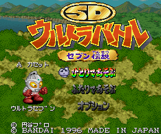
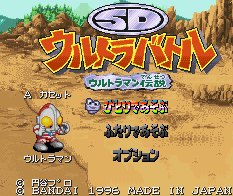

Ultraman - Sufami Turbo Games

Controls
- A button: Jump
- B button: Kick
- X button: Charge Power
- Y button: Punch
- L button: [not used]
- R button: Block
- Start: Pause
- Select: [not used]
This is a unique fighting game. You fight Street Fighter style in an area that allows you to move in any direction
like in Final Fight. By charging your power, you can unleash a super blast at your opponent. The blast you
unleash is chosen from a menu that pops up. While the blast is hitting your opponent, tapping a button will increase
the damage done by the blast. I am still unsure how to unleash or block these super blasts.

Controls
- A button: Jump
- B button: Kick
- X button: Charge Power
- Y button: Punch
- L button: [not used]
- R button: Block
- Start: Pause
- Select: [not used]
This is exactly the same as SD Ultraman Battle 7. The only differences are different enemies to fight and
different looks for your punch, kick, and super blasts.
Anime Video Game Resource Center © 1998 by Luis A. Cruz